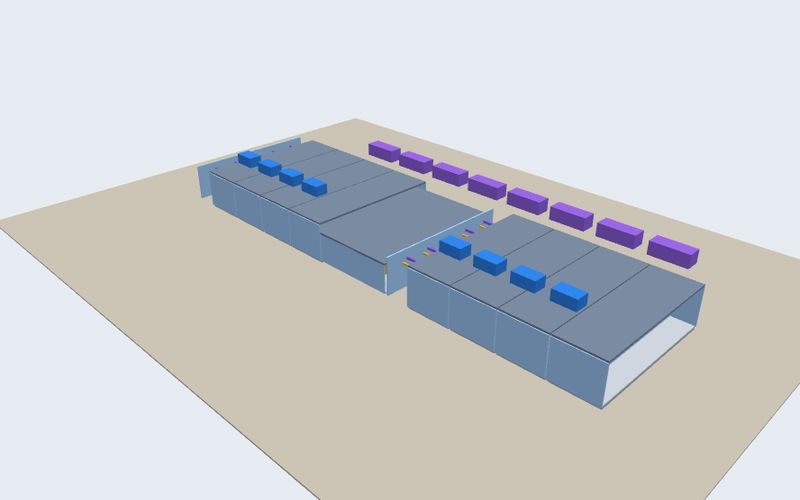

Data centersColocation Data Center, 2 Data Halls (12 MW)
Two 6 MW data halls, central electrical building, generator yard and roof chillers. Baseline with long-lead equipment and commissioning L1-L5.
- Crew scenario: 4 vs 6 flushing crews
- Update vs baseline
- Commissioning L3–L5